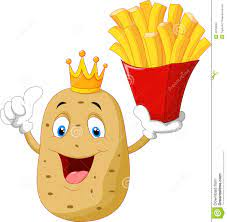

batata e bom ,qual a verdade por tras dessa fase?
deixe sua opinião abaixo:
potato

'uma vez um mudo disse que surdo ouvio o alejado correr atras de um caminhão parado em pleno dia as 11 da noite
que uma velha desfalecida falava que preferia morrer do que perder a vida"